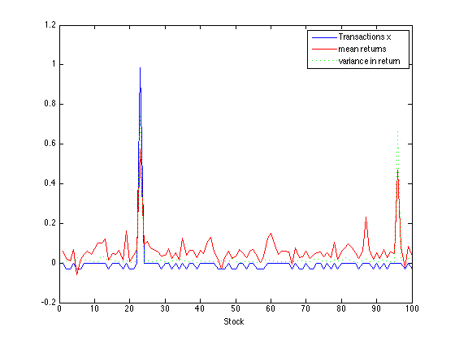
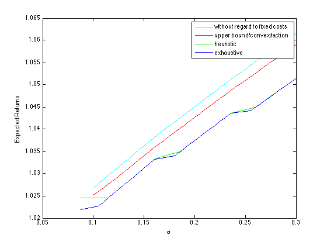
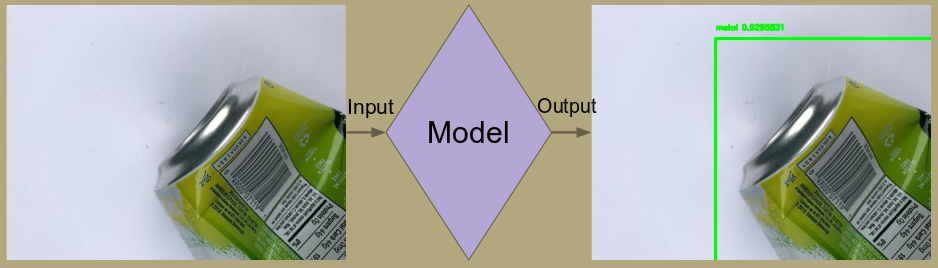
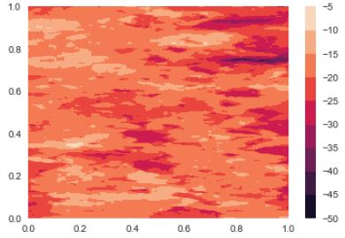
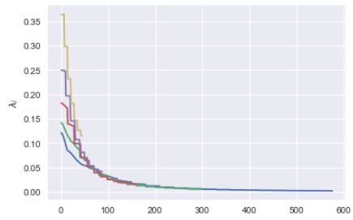

I have developed deep learning algorithm for estimating precise irrigation water requirement. It would help growers know irrigation water demand without soil sensors. It combines LANDSAT remote sense data with weather data for esimating daily evapotranspiration using various biophysical models. I have also developed cost calculators to understand the economics of Irrigation investment. I am currently working on development of bayesian decision models using Markov Chain Monte Carlo for predicting harvest for vineyards in California. We have deployed these various models in web framework using Python Django.
In this paper, I consider the problem of optimal portfolio selection, with transaction costs and
constraints on exposure to risk, short-sell constraints, etc. Under the assumption of linear transaction costs (which might not be completely realistic ),
bounds on the variance of the return,
bounds on different shortfall probabilities, the optimization problem of maximizing the asset wealth is convex which can be solved efficiently.
Portfolio optimization problems with transaction costs that include a fixed fee, or discount
breakpoints, which are more realistic cannot be directly solved by convex optimization. I address this issue of non-convexity by solving a small
number of related convex optimization
problems which can be used to provide better bounds for the original optimization problem.
Thus, this method only produces a sub-optimal solution with an upper bound on the original
optimum. This method involves employing a heuristic which only yields a sub-optimal solution


In this project I developed object detection and classification model for identifying the recyclables from trash using yolo v2 model.
The dataset has 2400 images of common recyclable materials belonging to 5 classes - Metal , Paper, Cardboard, Glass, Plastic.
The images contained trash objects at different angles and on a white background.
I modified the loss function and reduced model loading and computation time using TensorFlow.
Mean average precision obtained was aroud 0.84

In this project I created a web application that uses PHP to parse through the RESTful API provided by the National Institute of Health
which provides information about various drugs. This web application would help doctors to know if there are
adverse interaction between two drugs recommended to the patients.
The permeability of the soil is one of the largest unknowns in modeling underground flows.
In this project, I created a 2D model of permeability that can be used for propagating uncertainties.
I created a mathematical form of the best stochastic model for the permeability using Gaussian Process Regression. I also constructed the
Karhunen-Loeve expansion of the field using enough quadrature points so that we get a converged Nystrom approximation.


These are few of my projects. All the projects will be uploaded soon.